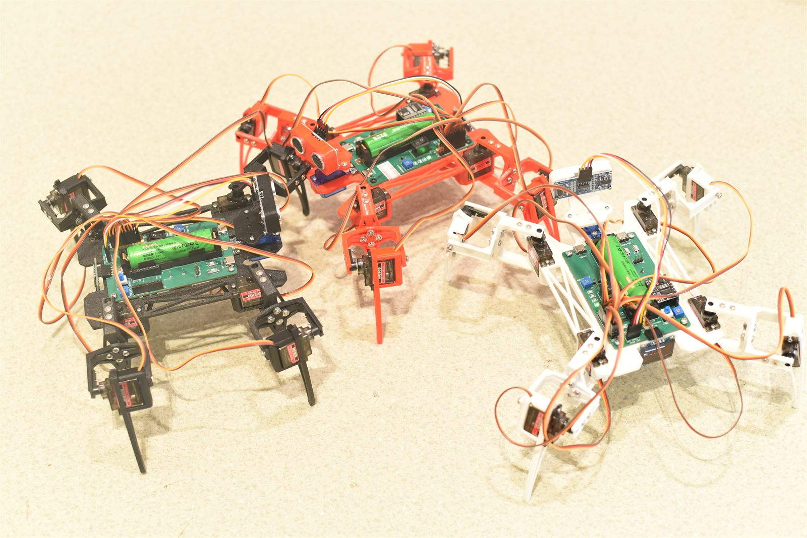
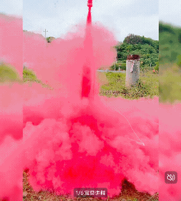
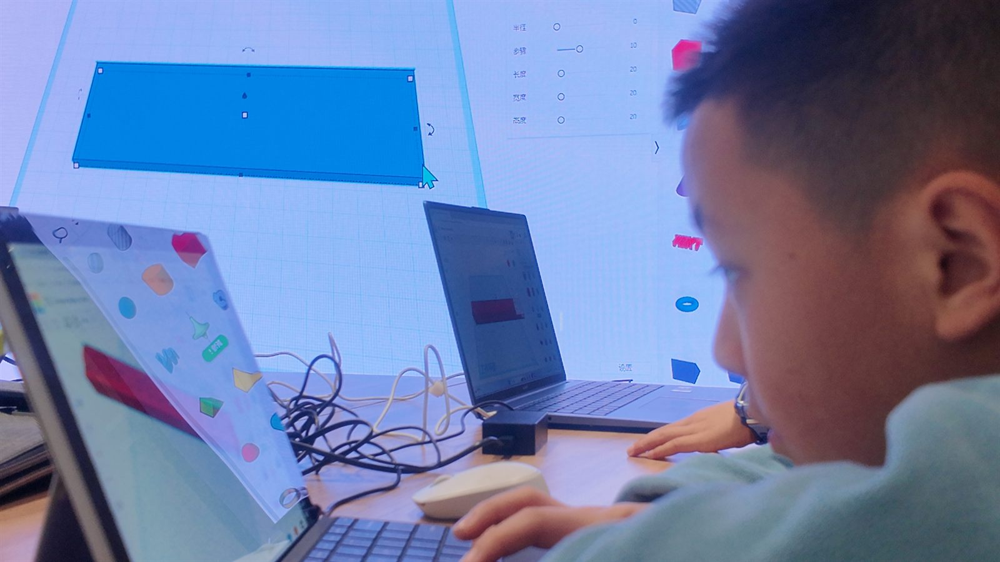
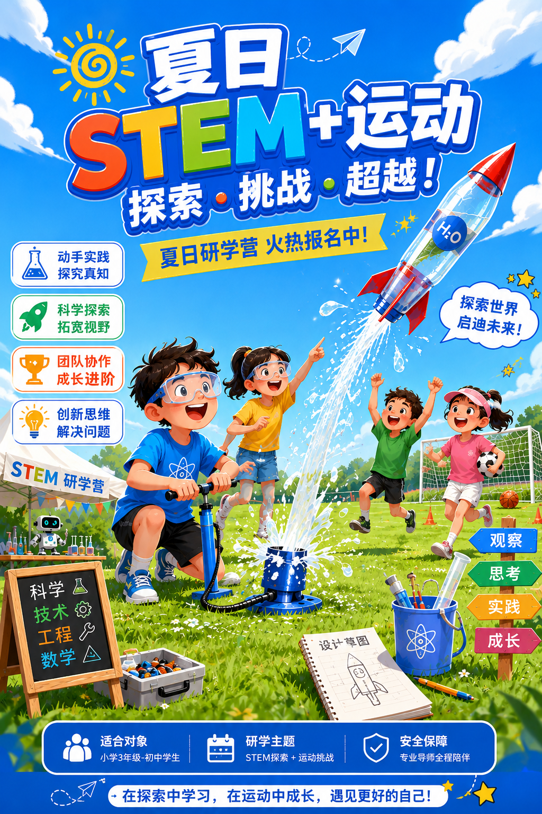
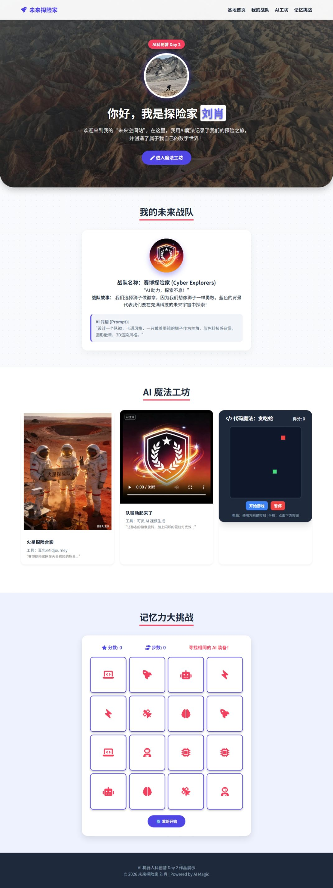

Challenge
从真实挑战开始：让船浮起来、让火箭飞起来、让机器人动起来。
Why Qingcheng
青程科创参考“教育品牌 + 项目招生系统 + 学员作品展示 + 工具平台 + 内容运营阵地”的闭环，把官网做成真正能转化、能沉淀、能运营的工作台。
Method
借鉴项目制学习和工程设计流程，把课程拆成可讲、可做、可评、可传播的闭环。
从真实挑战开始：让船浮起来、让火箭飞起来、让机器人动起来。
用观察、实验和 AI 工具形成假设，不把知识停留在概念层。
完成 CAD、3D 打印、电子控制、网页表达等可见成果。
通过数据、同伴互评、导师观察和现场测试持续迭代。
公开展示、答辩、作品墙和成长档案，把成果讲清楚。
Programs

围绕蜘蛛机器人、传感器、控制逻辑和 AI 认知展开，学生完成可演示的机器人作品和展示讲解。

从预制套件、发射台、安全线、倒计时音效到高度数据，形成强仪式感的工程挑战。
面向高中生，从浮力、稳定性、AI 协作、CAD、3D 打印到测试迭代，完成智能载重船。

从页面结构、图片素材、小游戏嵌入到主题切换，帮助学生做出自己的展示页。

Open Camp
把水火箭发射、体育挑战和科学观察结合起来，适合做半日营、一日营或暑期招生主打活动。
Experience Upgrade
水火箭不是看一个瓶子飞走。我们会把倒计时、彩色尾迹、风螺发声、高度记录和颁奖展示放进课程体验里，让学生记住自己的工程成果。

Flagship Course
从 SpaceX 到一艘船，建立第一性原理和工程问题意识。
从浮力到载重，建立科学模型并完成第一版设计。
理解重心、稳定性和倾覆风险，改进船体结构。
用 AI 辅助数据分析、代码、建模和方案诊断。
完成 CAD 建模、3D 打印和电子控制系统装配。
真实下水测试，记录失败，依据数据迭代方案。
公开展示成果，完成答辩、评价和成长反思。
Showcase

让每个孩子拥有可以讲述项目过程的数字作品，而不是只留下课堂照片。
把小组协作成果沉淀为可传播素材。
延续已有积分统计页面，形成更完整的营期运营闭环。
Tool Platform
先接入已有本地工具与成果页，后续可拆成独立工具站。
定义年龄段、项目难度、成果物和安全边界。
把视频、PPT、话术、物料清单和异常处理整理成助教可执行材料。
签到、分组、积分、拍摄、发射/答辩节点统一管理。
输出作品墙、短视频素材、家长反馈和下一期招生内容。
News & Trust
学生完成机器人调试、队徽、网页作品和小组展示。
模块化套件、发射台、物料清单和安全流程已成型。
我们记录工程日志、团队协作、公开表达和迭代过程。
FAQ
来自七日工程创造营方案的思路：分别回应学校、教师、家长和学生真正关心的问题。
可以。七日营可以转化为 16 周学期课程，也可以作为 STEM 节、科技节或研学项目的核心内容。
团队会提供 SOP、物料包、培训和课后复盘机制，降低对单个核心成员经验的依赖。
除了实体作品，还会有工程日志、程序代码、数据报告、展示视频和成长档案。
不是。工程教育看的是如何根据测试数据迭代，失败本身就是课程最重要的一部分。
Contact
适合学校、社区、研学机构或家长团体。先收集人数、年龄段、时间和希望主题，后续可以接入飞书表格或数据库。